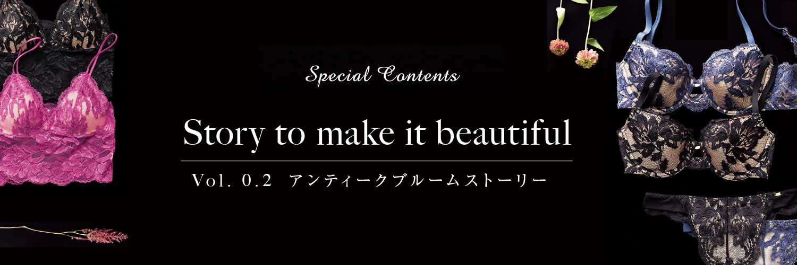
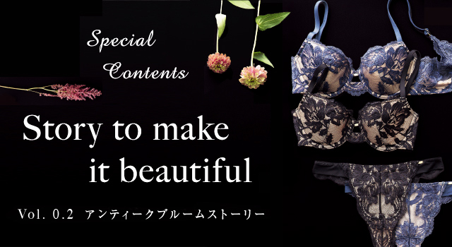

 
about SALON
女心をくすぐる洗練されたデザイン。
うっとりするような上質な素材感、着心地の良さにもこだわった
大人の女性のためのインティメイトウエア。
ほっこりリラックスするひと時も、
大人らしくきちんと装うときも、
時には華麗に着飾ることも大人の余裕で楽しみたい。
本当に自分が好きなもの、自分に似合うもの、気持ちいいものを
見極めることができるようになった世代だから
ルックスの美しさだけでなく、
肌に触れたときの質感や着心地も大切にしたい・・・
そんな全ての女性達へ。
Story 02 アンティークブルームブラ
海外の最高峰ランジェリーブランドも
使用している
「ストレッチ リバーレース」を
贅沢に使用したブラ。
大花に編まれた繊細なレースは
大人のセクシーさを更にアップしてくれる
強い味方。
この贅沢さを日常使い出来るのは
洗練された女性である証。
レースの“最高峰”とも言われる
「ストレッチリバーレース」を贅沢に使用。
最高峰と呼ばれる理由は、ごく細い糸を使用し
時間をかけて様々な模様を編んでいるから。
作り手の苦労が繊細で優美な表情の柄を作りだすのだ。
また、糸の中にストレッチが入っている為、
フィッティング時に感じるストレスを軽減し、
丸みのあるバストを作ってくれる。
Lace Design
ごく細い糸を撚り合わせ編み上げた繊細なレース。
クラシカルなレースの模様はいつもの自分を
よりエレガントに演出してくれます。まさに
SALON世代に
ピッタリな
高級感溢れるデザイン。
“最高級”と呼ばれる理由
リバーレースは、レース機の
中でも
使用できる糸数が15,000〜20,000本と最も多い。
立体的で繊細かつ複雑な模様を作りだす事が
できる為「最高級レース」と重宝されている。

華奢なストラップは、女性らしさの象徴
ブラと同じく、シルク100％のサテン生地でストラップゴムをくるみました。このひと手間を加える事で、高級感をプラス。また、華奢なストラップが女性らしさを更にアップさせてくれる。
センターゴアをつける事で
バストに安定感を
センターゴアの中心に穴が開いているので、肌が透けてセクシーな印象をプラスし、バストに安定感が出て綺麗に形を保ってくれます。

計算されたサイドベルト
のカッティング
最高峰のストレッチリバーレースを使用。伸縮性に優れたレースを使用しているから、フィッティング時のストレスを軽減。また、緻密に計算されたサイドベルトは、脇から背中にかけての気になるお肉を押さえ、すっきりしたボディラインを叶えてくれます。
-
アンティークブルームブラ(B~Eカップ)
￥6,800＋税

-
アンティークブルームキャミトップ(S~Lサイズ)
￥6,800＋税 -
アンティークブルームボーイレッグ(S~Lサイズ)
￥3,800＋税 -
アンティークブルームソング(ワンサイズ)
￥3,000＋税